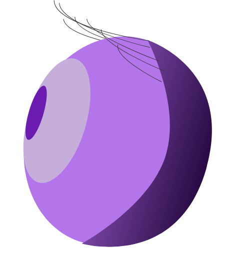

Maddalena
Sirellini
Oculista
La dottoressa Maddalena Sirellini è una specialista in oftalmologia, con una consolidata esperienza nella diagnosi, prevenzione e cura delle patologie oculari.
Attraverso un approccio attento e personalizzato, offre ai pazienti un'assistenza sanitaria di alta qualità, basata su competenza clinica, aggiornamento costante e tecnologie diagnostiche avanzate.
Contatti e Sedi
Le visite sono prenotabili
in 3 diverse strutture: